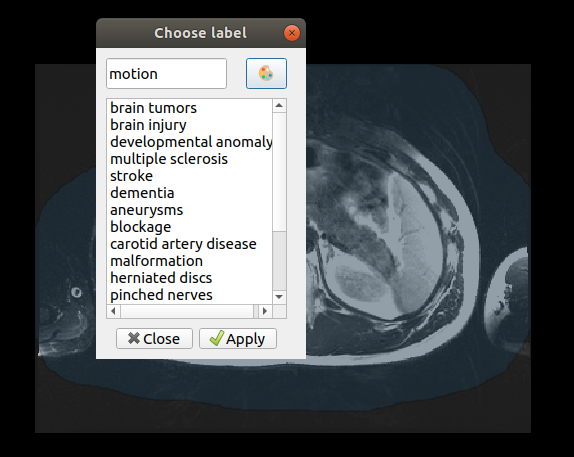

In the first tab Data Viewing, you can perform labeling on images and record it in a marking file. It is supported to draw and show labels in several layouts in 2D. But for a better performance, it is worth recommendation to label in only one layout. Initially, the labeling tools are disabled, until you select on labeling. In the meanwhile, it is not possible to use the image editing tools, including open new images or result file and switching between 2D and 3D. While labeling, there is a label list showing the label names and on which layer on the current image set.
- Draw labels
You can choose the label shape as rectangular or ellipse. Further, you can draw lasso along the contour of a target mask. Then, you should press Enter, there will be a pop up label window, you can select or type in the label name. Besides, you can also select the color of the label. After you confirm it, the face color of the new mask will be changed to the selected color. And the label name and color will be saved.
- Draw default labels
If you want to continuously draw one kind of label, you can check on Default Label. The color of this label is set to be default color. Then, every time you want to save the mask you have drawn, just press Enter, and you do not need to select the name and color in label window again. The default labels can be defined in a predefined label list. You can set label names and colors in the menu Settings-Labels. And you can also add new terms in the table.
- Edit labels
Every confirmed label will be saved and shown in the label list, if you select the mask, the corresponding item in the label list will be also selected. Once a label is selected, if it is in the shape of rectangular or ellipse, you can change the shape size and move it. You can again press Enter to change the label name and color, in the same way as creating labels. In another way, you can double click the item in the label list and then edit the name and color.
- Show on/off label
You can set every individual label showing on/off by checking it in the label list. Further, if you want to hide most of the labels, except only a few labels to show on, you can click the View all on/off button, then select the ones to show, vice versa.
- Delete label
If you want to delete a label, select it in the label list or the shape (both are synchronized), and click the button Delete the selected label, the label will be moved both in picture and in storage. As for shortcut, you can press key Delete, it will perform removing label in the same way.
- Show cross hair
As for assistance, you can check on Cross hair to draw shape with the indication of cross hair around cursor.
- Add label file
Click the button Open label file, you can add another label file in the format .CSV with the same structure as the one used currently. The file will be shown in the drop down list at the bottom, and the current label list will be shown based on the selected label file.
- Open label list
If you close the label list, you can reopen it by clicking the button Show label list.
Figure 1:
Create Label
|
 |
Figure 2:
Edit Default Label
|
 |